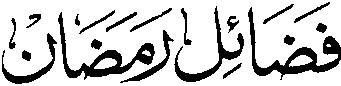

So Manga Kalbihan o Ramadhan (Paganay a Kinitogalinen)
Pho-on ko Itotogalin sa Basa Urdu ko

FADHA-IL E RAMADHAN A inizorat o
Shaikul Hadith
Maulana Mohammad Zacariyyah Kandhlawi (Rahmatullahi ‘Alaihi)
MASJID ABU BAKR AS-SIDDIQ Basak Malet-let, Marawi City PHILIPPINES, 2000